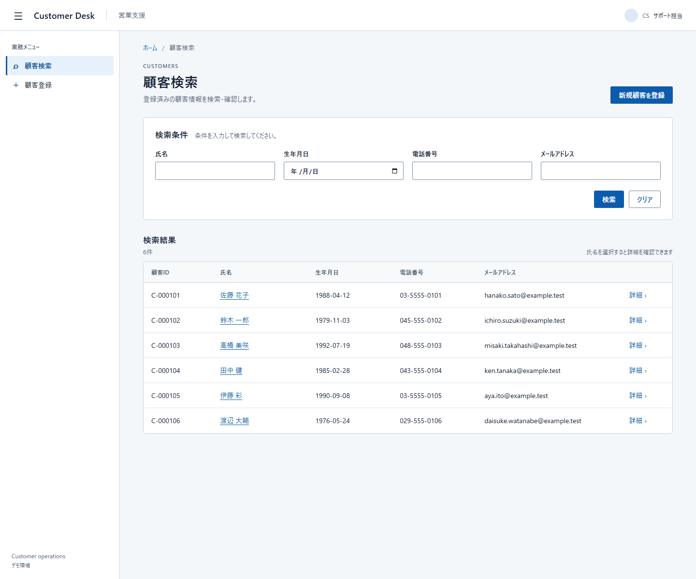
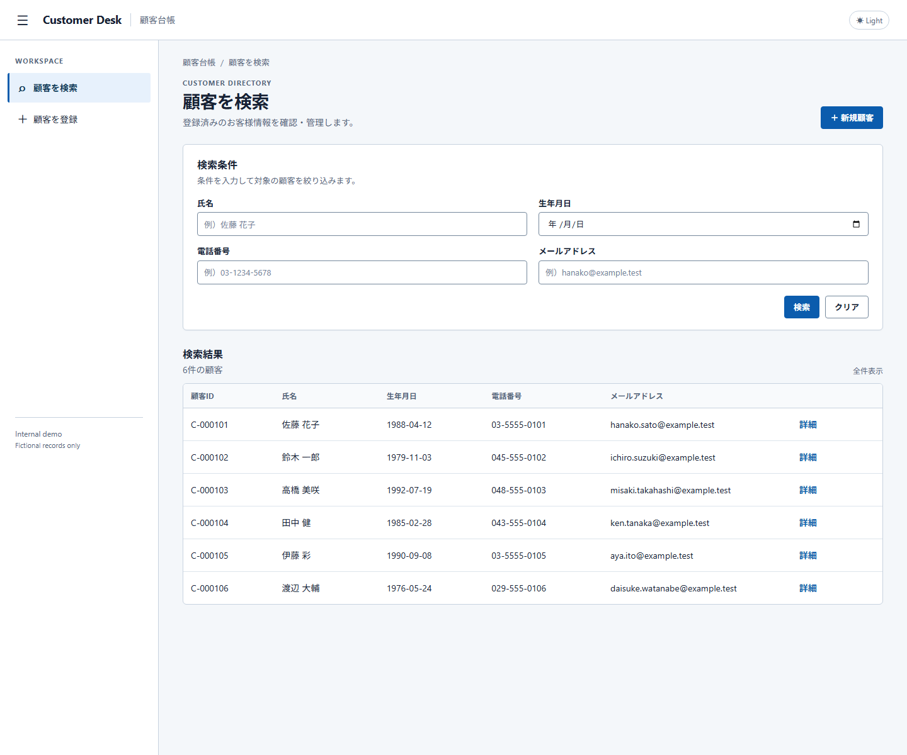
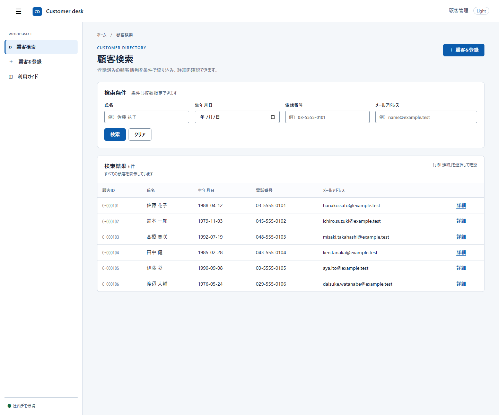

Run 1
1440×1200 · Drawer open · Light · 6 results

同じ固定仕様・同じ標準パック・同じ 1440×1200 の初期状態から、独立に生成した3つの静的画面です。いずれも架空の6顧客、Drawer開、Light、検索条件空、検索結果6件です。
このページは差を確認するためのPoCです。各画面は「正解」の候補ではなく、仕様が未固定の部分でどの程度の結果差が出るかを示します。
1440×1200 · Drawer open · Light · 6 results

1440×1200 · Drawer open · Light · 6 results

1440×1200 · Drawer open · Light · 6 results

| 観点 | Run 1 | Run 2 | Run 3 |
|---|---|---|---|
| 検索条件の配置 | 4条件を横一列 | 2列×2行 | 4条件を横一列 |
| Headerの情報 | 製品名と業務文脈 | 製品名・業務文脈・Light表示 | 製品名・業務文脈・Light表示 |
| Drawerの補助情報 | 最小限のナビゲーション | 内部デモ注記を含む | 利用ガイドを含む |
| 結果領域 | 検索結果と操作を分離 | 検索結果と新規作成を明示 | 検索結果と短い操作説明を併記 |